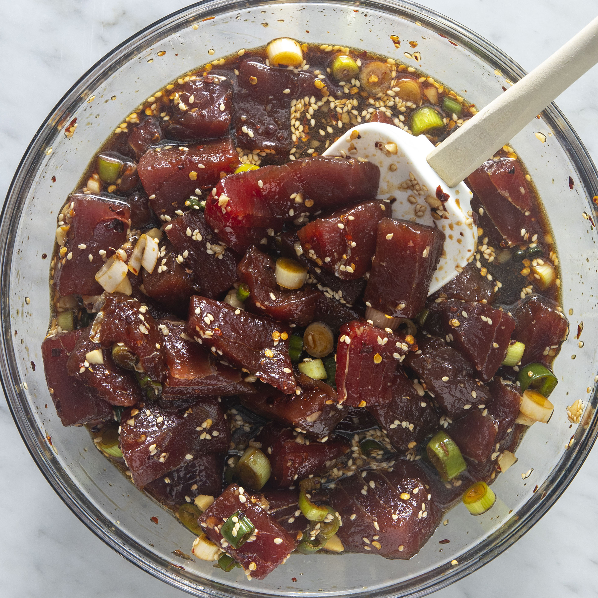

Ahi Poke

Description
This easy poke recipe is a refreshing Hawaiian salad of fresh ahi tuna steak cubes tossed with soy sauce, sesame oil, and green onions for a dish full of umami flavor. I like to add chopped macadamia nuts even though they are not authentic — they add a delicious crunch! This makes 4 main course servings or 8 appetizer servings.
Ingredients
- ahi tuna
- soy sauce
- sesame oil
- green onions
- toasted sesame seeds
- macadamia nuts
- crushed red pepper (optional)
Steps
- Making poke is so incredibly easy. Simply combine all the ingredients in a bowl and allow it to marinate in the fridge for at least two hours. Serve as desired.
- We love serving poke in a poke bowl.
- Poke doesn't last that long because the fresh fish can start to go bad. So, poke is best eaten the day-of or the next day. However, you can store poke in an airtight container in the fridge for up to two days.